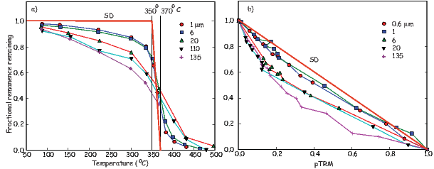
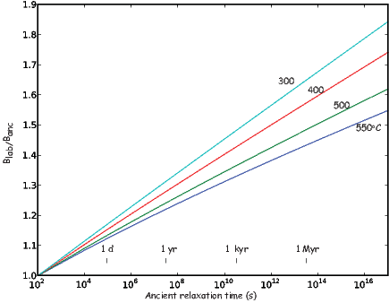
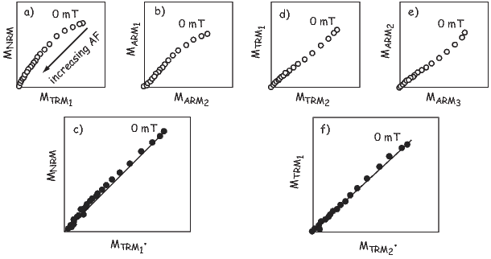

A complete understanding of the geomagnetic field requires not only a description of the direction of field lines over the surface of the Earth, but information about its strength as well. While directional information is relatively straight-forward to obtain, intensity variations are much more difficult and are the subject of this chapter.
In principle, it is possible to determine the intensity of ancient magnetic fields Banc because common mechanisms by which rocks become magnetized (e.g., thermal, chemical and detrital remanent magnetizations) are frequently approximately linearly related to the ambient field for low fields such as the Earth’s (Chapter 7 and Figure 10.1), i.e.,

where νlab and νanc are constants of proportionality. If the two constants are the same, we can divide the two equations and rearrange them to get:
 | (10.1) |
If the laboratory remanence has the same proportionality constant with respect to the applied field as the ancient one, the remanences were linearly related to the applied field, and the NRM comprises a single component, all one need do to get the ancient field is measure the NRM, and determine ν by giving the rock a laboratory remanence in a known field (Blab). Multiplying the ratio of the two remanences by the lab field would give the ancient magnetic field.

The theory just outlined is quite simple, yet, in practice, recovering paleointensity is not simple; there are many causes for concern:
In this chapter we will discuss the assumptions behind paleointensity estimates and outline various experimental and statistical methods involved in getting paleointensity data. We will start by considering thermal remanences and then address depositional ones. To our knowledge, no one has deliberately attempted paleointensity estimation using other remanence types such as chemical or viscous remanences although both are theoretically possible.
The theoretical basis for how ancient magnetic fields might be preserved was laid out by L. Néel (see Chapter 7). We expect thermal remanences of quasi-equant single domain particles to be linearly related to the applied field for low fields like the Earth’s (although elongate particles may not behave linearly even in low fields). Larger particles of magnetite have more complicated remanent states (flower, vortex, multi-domain) and TRM acquisition curves is more difficult to predict from theory. However, empirical studies have shown that TRM acquisition is significantly non-linear even at rather low field strengths and that the departure from non-linearity is grain size dependent; the larger the particle, the lower the field at which non-linearity becomes an issue (e.g., Dunlop and Argyle, 1997). Nonetheless, the largest intensities on the Earth today (~65 μT) are within the linear region for small equant particles and one could reach several hundred microtesla before having to worry about non-linearity. Therefore the linearity assumption appears to be reasonably well founded for ideal assemblages. Indeed, the linearity assumption is so deeply embedded in paleomagnetic practice that it is almost never tested! However, it has recently become evident that naturally occurring assemblages of single domain magnetite can have significantly non-linear TRM acquisition behavior (Selkin et al., 2007), even for fields as low as the Earth’s (see Figure 7.8). Because the exact form of the TRM acquisition depends critically on the magnetic assemblage, it would be wisest to include a TRM acquisition experiment in any paleointensity experiment.
There are several ways of checking the ability of the specimen to acquire TRM in paleointensity experiments. In Section 10.1.1 we will discuss the step-wise heating and Shaw methods. Other approaches attempt to prevent the alteration from occurring, for example by using microwaves to heat just the magnetic phases, leaving the rest of the specimen cool, or by minimizing the number of heating steps. Some methods attempt to normalize the remanence with IRM and avoid heating altogether. We will briefly describe each of these in turn, beginning with the step-wise heating family of experiments. Regardless of method chosen, it is essential that as many of the assumptions in the experiment be tested as possible. Experiments that skirt the issues involved simply give us data whose reliability can not be verified and, given all the things that can go wrong, such data are essentially useless.
A goal in paleointensity experiments since the earliest days has been the detection of changes in the proportionality constant caused by alteration of the magnetic phases in the rock during heating (e.g., Thellier and Thellier, 1959). The basic idea is to heat specimens up in stages, progressively replacing the natural remanence with partial thermal remanences. The step-wise heating approach is particularly powerful when lower temperature steps are repeated, to verify directly that the ability to acquire a thermal remenance has not changed.
The step-wise heating approach relies on the assumption that partial thermal remanences (pTRMs) acquired by cooling between any two temperature steps (e.g., 500∘ and 400∘C in Figure 7.9 of Chapter 7) are independent of those acquired between any other two temperature steps. This assumption is called the Law of Independence of pTRMs. The approach also assumes that the total TRM is the sum of all the independent pTRMs (see Figure 7.9), an assumption called the Law of Additivity

There are many possible ways to progressively replace the NRM with a pTRM in the laboratory. In the original step-wise heating method (e.g., Königsberger, 1938) the specimen is heated twice and cooled in the laboratory field; we will call this the “infield-infield” or “II” method. The first step is to heat the specimen to some temperature (T1) and cool it in the laboratory field Blab. Measurement of the combined remanence (what is left of the natural remanence plus the new laboratory pTRM) yields:

As magnetic shielding improved, modified protocols were developed. In the most popular paleointensity technique (usually attributed to Coe, 1967), we substitute cooling in zero field for the first heating step. This allows the direct measurement of the NRM remaining at each step. The two equations now are:

The laboratory MpTRM in this “zero-field/in-field” (or ZI) method is calculated by vector subtraction. Alternatively, the first heating and cooling can be done in the laboratory field and the second in zero field (Aitken et al., 1988), here called the “in-field/zero-field” or (IZ) method. As the NRM decays, the pTRM grows (Figure 10.3a). Such data are nowadays plotted against each other in what is usually called an Arai diagram (Nagata et al., 1963) as in Figure 10.3b.

In all three of these experimental designs (II, ZI and IZ), lower temperature in field cooling steps can be repeated to determine whether the remanence carrying capacity of the specimen has changed (e.g., Thellier and Thellier, 1959). These steps are called pTRM checks (triangles in Figure 10.3b). Differences between the first and second MpTRMs at a given temperature indicate a change in capacity for acquiring thermal remanences (e.g., δ300 in Figure 10.3b) and are grounds for suspicion or rejection of the data after the onset of such a change. [Some experiments repeat lower temperature zero field steps but these are not strictly pTRM checks (although they are called that) because they really test whether the NRM remaining at that temperature has been contaminated by unremoved pTRM tails or CRM.]
Despite its huge popularity and widespread use, the approach of progressively replacing the natural remanence with a thermal remanence has several drawbacks. Alteration of the ability to acquire a pTRM is not the only cause for failure of the assumption of equality of νlab and νanc. Single domain theory and the Law of Reciprocity required by all step-wise heating methods assumes that the remanence acquired by cooling through a given temperature interval is entirely removed by re-heating to the same temperature and cooling in zero field. Yet both experiment (Bol’shakov and Shcherbakova, 1979) and theory (e.g., Dunlop and Xu, 1994) suggest that the essential assumption of equivalence of blocking and unblocking temperatures may break down for larger particles.

Dunlop and Özdemir (2001) illustrated the failure of the reciprocity assumption with a suite of specimens whose grains sizes were well known. First, they imparted a pTRM over a narrow temperature interval of 370–350∘C . They then subjected the specimens to step-wise thermal demagnetization, monitoring the remanence remaining after each treatment step (see Figure 10.4a.) The heavy red line labelled “SD” is the prediction from the law of reciprocity. This assumption is not met by any of the specimens (the smallest of which was 0.6 μm, much larger than SD) and the larger the grain size, the larger the deviation from theory. The portion of pTRM lost by heating to temperatures below the blocking temperature is a low-temperature pTRM tail and that above is a high temperature pTRM tail. These tails have a profound affect on the outcome of double heating experiments as shown in Figure 10.4b. The data sag below the ideal line, becoming markedly curved for grains larger than about a micron.
What causes failure of reciprocity? If the particle is large enough to have domain walls in its remanent state, the behavior is not easily understood by theory. At just below its Curie Temperature the particle would be at saturation. As the particle cools, domain walls will begin to form at some temperature. After cooling all the way to room temperature, the remanent state, it will have some net moment because the domain walls will distribute themselves such that there is incomplete cancellation leaving a small net remanence proportional to the applied field for moderate field strengths. As the temperature ramps up again, the walls “walk around” within the particle, perhaps beginning below the blocking temperature as they seek to minimize the magnetostatic energy. If the particle is cooled back to room temperature, there could be a net loss of magnetization, giving rise to low temparture tails. The walls may not actually be destroyed until the temperature is very near the Curie Temperature and some fraction of the pTRM could persist, giving rise to high temperature tails.
A failure of reciprocity means that νlab≠νanc and the key assumptions of the step-wise heating type methods are not met. The Arai plots may be curved as in Figure 10.4b. If any portion of the NRM/TRM data are used instead of the entire temperature spectrum, the result could be biased. For example, the lower temperature portion might be selected on the grounds that the higher temperature portion is affected by alteration. Or, the higher temperature portion might be selected on the grounds that the lower temperature portion is affected by viscous remanence. Both of these interpretations are wrong.

In order to detect inequality of blocking and unblocking and the effect of “pTRM tails”, several embellishments to the step-wise heating experiments have been proposed and more are on the way. One modification is to alternate between the IZ and ZI procedures (the so-called IZZI method of, e.g., Tauxe and Staudigel (2004; see also Ben-Yosef et al., 2008). The protocol shown in Figure 10.5 not only alternates ZI and IZ steps, but embeds a pTRM check step within each ZI step. There is also a third zero field step inserted between the ZI and IZ steps, labelled pTRM-tail check. This step was first described by Dunlop and Özdemir (1997) but is usually attributed to Riisager and Riisager (2001). It was designed to assess whether the partial thermal remanence gained in the laboratory at a given temperature is completely removed by re-heating to the same temperature. The difference between the two zero-field steps is attributed to a “pTRM tail”. In the original application, the absolute value of the difference was plotted on the vertical axis (Dunlop and Özdemir, 1997; see also Riisager and Riisager, 2001) and was interpreted to be a consequence of an inequality of the unblocking temperature Tub and the original blocking temperature Tb in violation of the law of reciprocity. The IZZI method is extremely sensitive to the presence of pTRM tails which make the and/or Zijderveld diagrams “zig-zag” as in the example of a complete IZZI experiment shown in Figure 10.6. The zig-zag behavior was explained by Yu et al. (2004) as the effect of pTRM tails.
In Figure 10.6, we plot the pTRM tail checks from a typical experiment as blue squares along the X axis; note that these are not absolute values, but are the magnitudes of the differences in zero field steps separated by an in-field step at the same temperature. We plot them this way because what is being measured is a difference in the NRM remaining, not the pTRM. It is perhaps surprising that most pTRM tails appear to be negative – not positive, suggesting the dominance of low temperature tails, as opposed to high temperature tails. Note also that the IZ steps are typically farther from the ideal line than are the ZI steps. In any case, significant zig-zagging should raise warning flags about the reliability of data acquired by such non-ideal specimens.

There are several other violations of the fundamental assumptions that require additional tests and/or corrections in the paleointensity experiment besides alteration or failure of reciprocity. For example, if the specimen is anisotropic with respect to the acquisition of thermal remanence (e.g., Aitken et al., 1981), the TRM can be strongly biased (Figure 10.7). If this is the case, the TRM can be corrected by determining the TRM (or the ARM proxy) anisotropy tensor and matrix multiplication to recover the original magnetic vector (see Section 13.7.1 in Chapter 13 and Selkin et al., (2000), for a more complete discussion.) One quick way of detecting if anisotropy might be a problem is to compare the direction of the pTRM acquired in the laboratory with the laboratory field direction, a parameter called γ in Appendix C.3 . If this angle exceeds ~ 5∘, the anisotropy tensor should be determined. This will not work if the lab field is applied near the principal direction where only a change in magnitude is expected, but does work if the laboratory field is applied at an angle to the principal direction.

Differences in laboratory and ancient cooling rate are also important. The approach to equilibrium is a function of time. Slower cooling results in a larger TRM, hence differences in cooling rate between the original remanence acquisition and that acquired in the laboratory will lead to erroneous results (e.g., Halgedahl et al., 1980). Compensating for differences in cooling rate is relatively straight-forward if the original cooling rate is known or can be approximated and the specimens behave according to single domain theory (see Figure 10.8). Alternatively, one could take an empirical approach in which the rock is allowed to acquire a pTRM under varying cooling rates (e.g., Genevey and Gallet, 2003), an approach useful for cooling rates of up to a day or two.

The previous section was devoted to experiments in which detection of non-ideal behavior is done by repeating various temperature steps. The full IZZI experiment, including TRM acquisition tests and perhaps even TRM anisotropy or non-linear TRM acquisition tests involves many heating steps (as many as 50!). Each time a specimen is heated, it is exposed to the risk of alteration. Some experimental designs focus on reducing the number of heating steps or the type of heating to minimize the frequently catastrophic consequences of laboratory heating on the results.
There are a number of strategies for reducing the effects of laboratory heating. These include using controlled atmospheres, reduced number of heating steps and reduced heating of the matrix with microwaves focussed on the ferromagnetic components of the specimen.
Thellier and Thellier (1959) tried heating specimens in neutral atmospheres. This requires either placing the specimen in a vacuum or a chemically neutral atmosphere. There are technical difficulties and most researchers have found minimal improvement in their results.
Reducing the number of heating steps has been approached in several ways. Kono and Ueno (1977) describe in detail a single heating step per temperature method originally suggested by Kono (1974). Assuming that the specimen has a single component of magnetization, which can be isolated after demagnetizing at some low temperature (100∘C), the specimen is heated in a laboratory field applied perpendicular to the NRM. MpTRM is gotten by vector subtraction. The goal is that by reducing the number of heatings, the alteration can be reduced to some extent. This method requires strictly uni-vectorial NRMs (an assumption that is difficult to test with the data generated by this method) and rather delicate positioning of specimens in the furnace or fancy coil systems that generally have a limited region of uniform field, reducing the number of specimens that can be analyzed in a single batch. Steps like the pTRM checks and pTRM tail checks are possible with this method, but they necessitate additional (zero field) heating steps.
A second strategy for reducing the number of heating steps is to treat multiple specimens from a single cooling unit as a homogeneous set and expose each specimen to a limited subset of all the heating steps required for a complete paleointensity experiment. These “multi-specimen” techniques derive from one proposed by Hoffman et al. (1989). Recent incarnations include Hoffman and Biggin (2005) and Dekkers and Böhnel (2006). The basic idea is to take multiple specimens from a given cooling unit and subject them to a reduced number of heating steps. The data are stacked to yield a single paleofield estimate. The Hoffman-Biggin (2005) method has some estimate of the effects of alteration by including at least one double heating step. The method of Dekkers and Böhnel (2006) is somewhat different in that pTRMs are imparted at a temperature thought to exceed the overprint unblocking but be less than the onset of chemical alteration. Each specimen is treated in different laboratory field strength in a field parallel to the NRM direction. This technique has been sold as being applicable to multi-domain remanences, but the inequality of blocking and unblocking makes this invalid. Moreover, there are few ways to check the assumptions of uni-vectorial NRM, lack of alteration in the lab and the insidious effect of pTRM tails.
The previous sections were devoted to experiments in which detection of non-ideal behavior is done by repeating various temperature steps. In this section we will briefly introduce an alternative approach, long in use in paleointensity studies, the so-called Shaw method (e.g., Shaw, 1974). There are many variants of the Shaw method and the reader is referred to Tauxe and Yamazaki (2007) for a recent review. In its simplest form, we measure the NRM, then progressively demagnetize it with alternating fields (AF) to establish the coercivity spectrum of the specimen prior to heating. The specimen is then given an anhysteretic remanence (MARM1; see Chapter 7). The use of anhysteretic remanence is usually rationalized by pointing out that in many ways it is analogous to the original TRM (see Dunlop and Özdemir, 1997). MARM1 is then progressively demagnetized to establish the relationship between the coercivity spectrum of the MNRM (presumed to be a thermal remanence) and MARM1 prior to any laboratory heating. As with the step-wise heating methods, MNRM is normalized by a laboratory thermal remanence. But in the case of the Shaw type methods, the specimen is given a total TRM, (MTRM1) which is AF demagnetized as well. Finally, the specimen is given a second ARM (MARM2) and AF demagnetized for the last time.

The basic experiment is shown in Figures 10.9a and b. If the first and second ARMs do not have the same coercivity spectrum as in Figure 10.9b, the coercivity of the specimen has changed and the NRM/TRM ratio is suspect.
There are many variants of the Shaw method that seek to improve reliability or success rate and the reader is referred to a review by Tauxe and Yamazaki (2007) for a more complete discussion. The primary reasons stated for using Shaw-type methods as opposed to the theoretically more robust step-wise heating methods are: 1) they are faster, and 2) because the specimen is only heated once (albeit to a high temperature), alteration may be minimized. The first rationale is no longer persuasive because modern thermal ovens have high capacities and step-wise heating methods are certainly not slower than the Shaw method on a per specimen basis, if one analyzes lots of specimens. This is particularly true for the more elaborate Shaw family protocols currently in use. The second rationale may have some validity and warrants further work. The key features of any good experiment are the built-in tests of the important assumptions and current designs of Shaw type experiments do not build in the necessary checks.
Several alternative approaches have been proposed which instead of detecting non-ideal behavior such as alteration, attempt to minimize it (see Tauxe and Yamazaki, 2007 for more complete discussion). These methods include reducing the number of heating steps required (as in the Shaw methods), heating specimens in controlled atmospheres, reducing the time at temperature by for example measuring the specimens at elevated temperature, or using microwaves to excite spin moments as opposed to direct thermal heating. Of these, the microwave paleointensity approach is perhaps the most popular and we will briefly discuss that here.
Until now we have not concerned ourselves with HOW the magnetic moment of a particular grain becomes unblocked. Earlier, we mentioned “thermal energy” and left it at that. But how does thermal energy do the trick?
An external magnetic field generates a torque on the electronic spins, and in isolation, a magnetic moment will respond to the torque in a manner similar in some respects to the way a spinning top responds to gravity: the magnetic moment will precess about the applied field direction, spiraling in and come to a rest parallel to it. Because of the strong exchange or superexchange coupling in magnetic phases, spins tend to be aligned parallel (or antiparallel) to one another and the spiraling is done in a coordinated fashion, with neighboring spins as parallel as possible to one another. This phenomenon is known as a spin wave (see Figure 3.10 in Chapter 3).
Raising the temperature of a body transmits energy (via phonons) to the electronic spins, increasing the amplitude of the spin waves. This magnetic energy is quantized in magnons. In the traditional step-wise heating experiment, the entire specimen is heated and the spin waves are excited to the point that some spin vectors may flip their moments as described in Chapter 7.
As in most kitchens, there are two ways of heating things up: the conventional oven and the microwave oven. In the microwave oven, molecules with certain vibrational frequencies (e.g., water) are excited by microwaves. These heat up, passing their heat on to the rest of the pizza (or whatever). If the right microwave frequency is chosen, ferromagnetic particles can also be excited directly, inviting the possibility of heating only the magnetic phases, leaving the matrix alone (e.g., Walton et al., 1993). The rationale for developing this method is to reduce the degree of alteration experienced by the specimen because the matrix often remains relatively cool, while the ferromagnetic particles themselves get hot. But, the magnons get converted to phonons, thereby transferring the heat from the magnetic particle to the matrix encouraging alteration (even melting sometimes!). So, while alteration may in fact be reduced (see, e.g., Hill et al. 2005), it has not yet been eradicated.
The same issues of non-linearity, alteration, reciprocity, anisotropy and cooling rate differences, etc., arise in the microwave approach as in the thermal approach. Ideally, the same experimental protocol could be carried out with microwave ovens as with thermal ovens. In practice, however, it has been quite difficult to repeat the same internal temperature, making double (or even quadruple) heatings challenging. Yet tremendous strides have been made recently in achieving reproducible multiple heatings steps (e.g., Hill et al., 2005).
It is likely that the issues of reciprocity of blocking and unblocking in the original (thermally blocked) and the laboratory (microwave unblocked) and differences in the rate of blocking and unblocking will remain a problem for some time as they have for thermally blocked remanences. It is also worth noting that the theoretical equivalence between thermal unblocking and microwave unblocking has not yet been demonstrated. Nonetheless, if alteration can be prevented by this method, and the theoretical underpinnings can be worked out, it is well worth pursuing.
Another very important approach to the paleointensity problem has been to find and exploit materials that are themselves resistant to alteration. There are an increasing variety of promising materials, ranging from quenched materials, to single crystals extracted from otherwise alteration prone rocks, to very slowly cooled plutonic rocks (e.g., layered intrusions). Quenched materials include volcanic glasses (e.g., Pick and Tauxe , 1993; Tauxe 2006), metallurgical slag (e.g., Ben-Yosef et al., 2008) and welded tuffs (unpublished results). Single crystals of plagioclase extracted from lava flows (see review by Tarduno et al., 2006) can yield excellent results while the lava flows themselves may be prone to alteration or other non-ideal behavior. Parts of layered intrusions (e.g., Selkin et al., 2000b) can also perform extremely well during the paleointensity experiment.
Sometimes it is difficult or impossible to heat specimens because they will alter in the atmosphere of the lab, or the material is too precious to be subjected to heating experiments (e.g., lunar samples and some archaeological artifacts). If TRM is linear with the applied field, there may be an alternative for order of magnitude guesstimates for paleointensity without heating at all. TRM normalized by a saturation remanence (Mr) can be quasi-linearly related to the applied field up to some value depending on mineralogy and grain size population.
TRM/IRM can at best only give an order of magnitude estimate for absolute paleointensity and that only for ideal, equant, and small SD magnetic assemblages (see Chapter 7 for theoretical treatment). These strict constraints may make even an order of magnitude guess unreliable. Finally, multi-domain TRMs and IRMs do not respond similarly under AF demagnetization, the former being much more stable than the latter. Nonetheless, if magnetic uniformity can be established, it may in fact be useful for establishing relative paleointensity estimates; thisis done routinely in sedimentary paleointensity studies as we shall see later in the chapter. The caveats concerning single component remanences are still applicable and perhaps complete AF demagnetization of the NRM would be better than a single “blanket” demagnetization step. Moreover, we should bear in mind that for larger particles, TRM can be strongly non-linear with applied field at even relatively low fields (30 μT) according to the experimental results of Dunlop and Argyle (1997). The problem with the IRM normalization approach is that domain state, linearity of TRM, and the nature of the NRM cannot be assessed. The results are therefore difficult to interpret in terms of ancient fields.
Given the number of key assumptions in the paleointensity method and the growing complexity of the modern experimental design, there are a bewildering array of statistics that can be calculated to assess the quality of a given data set. Many of these are defined in Appendix C.3 to which the reader is referred for a detailed explanation. There is at present no consensus on which statistics guarantee the reliability of a given result. It is safe to say that the more tests performed (and passed), the greater the confidence in the results. And, the more replicate specimens that are measured and the more samples from different recording media, that are measured yielding consistent results, the more confidence we can have in the conclusions. This is a rapidly developing area of research, so stay tuned!
The principle on which paleointensity studies in sedimentary rocks rests is that DRM is linearly related to the magnitude of the applied field B. We learned in Chapter 7 that this is unlikely to be universally true, yet it is the foundation of all relative paleointensity studies published to date. Forgetting for the moment that non-linear behavior may in fact be frequently found in nature, we will proceed with a discussion of paleointensity in sediments making the first order assumption of linearity.

Following from the introductory discussion of paleointensity in general, we would require a laboratory redeposition experiment that duplicates the natural remanence acquisition process in order to be able to determine absolute paleointensity in sediments. The problem with sedimentary paleointensity data is that laboratory conditions can rarely (if ever) achieve this. Assuming that the remanence is not chemical but depositional in origin, the intensity of remanence is still a complicated function of applied field, magnetic mineralogy, concentration, and even chemistry of the water column.
Under the ideal conditions depicted in Figure 10.10, the initial DRM of a set of specimens deposited under a range of magnetic field intensities (B) is shown as open circles. The relationship is not linear because each specimen has a different response to the applied field (here called magnetic activity [am]) as a result of differences in the amount of magnetic material, magnetic mineralogy, etc. For example, specimens with a higher concentration of magnetic material will have a higher DRM. If [am] can be successfully approximated, for example, by bulk remanences such as IRM or ARM, or by χb (Chapters 7 and Chapter 8), then a normalized DRM (shown as dots in Figure 10.10) will reflect at least the relative intensity of the applied field.
Our theoretical understanding of DRM is much less developed than for TRM (Chapter 7). Because of the lack of a firm theoretical foundation for DRM, there is no simple method for determining the appropriate normalization parameter. In Chapters 7 and 8 we considered a variety of theoretical aspects of DRM and various parameters potentially useful for normalization. Many proxies have been proposed ranging from normalization by bulk magnetic properties such as ARM, IRM, or χb or more complicated proxies involving selective demagnetization of the NRM or normalizer or both. One can imagine that even more sophisticated normalization techniques could be devised by targeting particular coercivity fractions discovered by the IRM component diagrams discussed in Chapter 8.
Tauxe et al. (2006) summarized two major complications in our quest for meaningful relative paleointensity estimates from sediments. First, the size of the floc in which magnetic moments are embedded plays a huge role in the DRM strength, yet estimating original floc size in sediments is a daunting task. Second, DRM is only approximately linearly related to the applied field for the larger floc sizes; small flocs or isolated magnetic particles are likely to be highly non-linear in their magnetic response.
How can sedimentary relative paleointensity data be judged? Here are some thoughts:
SUPPLEMENTAL READINGS: Dunlop and Özdemir (1997), Chapters 8 and 15; Valet (1998); Tauxe and Yamazaki (2007).
Problem 1
a) In this problem, we will use published data to get a feel for “real” paleointensity data. Make sure you have the PmagPy programs working (see PmagPy webiste). You can find a data set associated with a particular publication (if someone uploaded the data), by using the digital object identifier (DOI) search. For example, the data set of Shaar et al. (2011) could be located using the syntax:
http://earthref.org/doi/10.1016/j.epsl.2010.11.013
When you locate the reference, click on the text file icon under the column labeled “Data”. This is a dataset from Israeli/Jordanian metallurgical slags.
b) Create a new folder for these data and put the downloaded text file in it. Make sure it is a directory with no spaces in the path name.
c) Open a terminal window (command prompt on Windows machines). On the command line, type: QuickMagIC.py. Change directories into your “Project Directory”.
d) Click on the “unpack downloaded txt file” button on the front panel and choose the file you downloaded.
e) Click on the ‘Thellier GUI’ button.
f) Step through the data by clicking on ‘next’. You don’t have to look at all of them, because there are a LOT.
g) You will be able to see the interpretations used in the publication. Perhaps you would interpret the data differently. To change an interpretation, change the temperature bounds for the slope calculation. A complete list of the definitions for paleointensity statistics used by the GUI is available as a supplement to the article by Paterson et al., 2014 and available for download here.
You can see how the answer will change with different boundary picks and also whether the interpretation ‘passes’ or not.
h) The selection criteria can be changed by choosing Analysis =>Acceptance criteria =¿ change acceptance criteria. After changing these, you can try to run the auto interpreter to see what will ‘pass’.
i) What do you think were the guiding principles that the original author used to select bounds? Do you think these are reasonable? What principles would YOU use to guide your interpretations of these data? Which statistics are the most useful?
Problem 2
a) Now go to permalink:
http://earthref.org/MagIC/doi/10.1111/j.1365-246X.1997.tb04082.x
and download the data as before. Make a new project directory and copy the downloaded file into it. Unpack the txt file with QuickMagIC.py.
b) Find your command line and change directories into your new project directory by typing cd MY_DIRECTORY, where you type the directory name instead of MY_DIRECTORY. Then type biplot_magic.py. This will give you a list of available options for plotting measurement data. In this case they are ’LT-AF-Z’, ’LT-AF-I’, ’LT-IRM’, ’LP-X’, which are ‘method codes’ in MagIC. On the http://earthref.org/MAGIC website, follow the link to “Method Codes”. Examine the available options under “Lab Protocol” and “Lab Treatment” and find the option that describes these.
c) Type: biplot_magic.py. Using the help message for this program (remember the -h option), figure out how to plot ARM versus χ and IRM versus χ for these data.
d) Use the program strip_magic.py to plot relative intensity versus age.
e) These data are supposedly relative paleointensity data from the Oligocene in the South Atlantic. What would convince you that these were “real”?